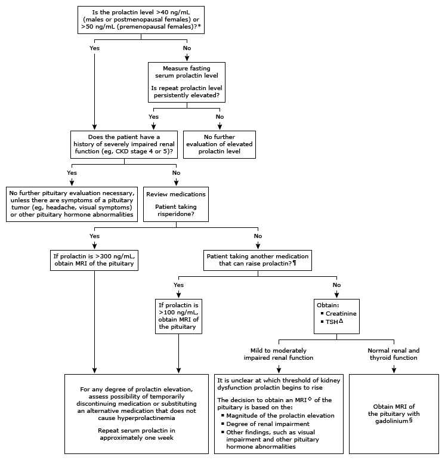

CKD: chronic kidney disease; MRI: magnetic resonance imaging; BUN: blood urea nitrogen; TSH: thyroid-stimulating hormone.
* The usual normal range for serum prolactin is up to 20 ng/mL (20 mcg/L [SI units]) in males and postmenopausal females and up to 30 ng/mL (30 mcg/L) in premenopausal females. Interpretation of a specific abnormal test result should be based upon the reference range reported with that result.
¶ Refer to the UpToDate table on medications that cause hyperprolactinemia.
Δ If hyperprolactinemia is solely the result of hypothyroidism, it will remit as the hypothyroidism is corrected.
◊ MRI for a patient with any degree of renal impairment should be ordered without gadolinium.
§ If there is doubt about the diagnosis of hyperprolactinemia (due to the absence of typical symptoms), measure macroprolactin before proceeding with MRI. Macroprolactin is an aggregate of prolactin and antibodies that are detected by the prolactin assay but that are not biologically active. Macroprolactinemia does not usually cause symptoms.